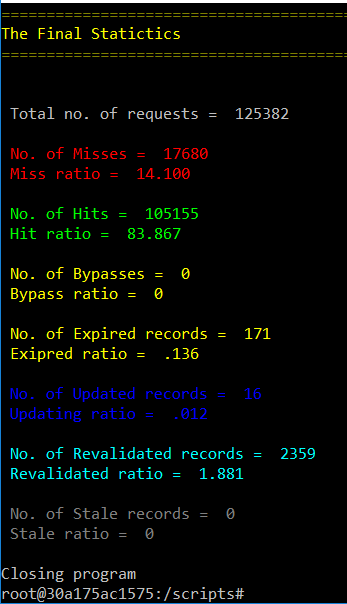
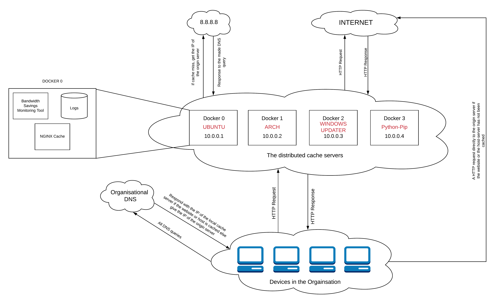

Get Started
The "Generic Cache" caching service is a Docker based generic cache, which uses NGINX as the underlying server. This can be used to reduce latency in the internal LAN and avoid repeatative usage of the external access link. This can also be used to mimic a mirror server by using an authoritative server. The Cache-Service can handle only HTTP requests. Thus only the HTTP requests must be directed to it, which can done using DNS and an SNI Proxy which would be used to handle HTTPS requests.
To use Generic Cache on internal LAN, you would just need to set up Static IPs for each cache domain, then run an instance of hlpr98/generic_cache:latest (instruction are here), hlpr98/light_dns:latest (link to instructions) on each of the static IPs and an instance of hlpr98/sni_proxy:latest bound to port 443 of the docker host.
Installation
Installing Docker (pre-requisite)
1. Setting up repository
$ sudo apt-get update;
$ sudo apt-get install \
apt-transport-https \
ca-certificates \
curl \
gnupg-agent \
software-properties-common;
$ curl -fsSL https://download.docker.com/linux/ubuntu/gpg | sudo apt-key add -;
$ sudo add-apt-repository \
"deb [arch=arm64] https://download.docker.com/linux/ubuntu \
$(lsb_release -cs) \
stable";
2. Installing Docker CE
$ sudo apt-get update;
$ sudo apt-get install docker-ce docker-ce-cli containerd.io;
$ sudo systemctl status docker;
3. Adding Username to Docker group/p>
$ sudo usermod -aG docker ${USER};
$ su - ${USER};
Installing Curl (pre-requisite)
$ sudo apt-get install curl
Building and Using Generic Cache
Generic cache can be either
- built from source prior to usage (as shown below).
- the Docker image in DockerHub can be used directly too (follow the instructions from 4th step below)
The steps to build the cache is as follows:
1. Clonning the repository
$ git clone https://github.com/hlpr98/Caching-Service.git
2. Building Generic Cache Docker image
$ cd Generic_cache;
$ docker build -t hlpr98/generic_cache .
3. Creating disk space for cache
$ mkdir /home/cache;
$ mkdir /home/cache/<container name>;
$ mkdir /home/cache/<container name>/data;
$ mkdir /home/cache/<container name>/logs;
4. Running the docker container as a daemon
$ docker run -td \
--restart unless-stopped \
--name <container name> \
-v /home/cache/<container name>/data:/data/cache \
-v /home/cache/<container name>/logs:/data/logs \
-p <Your IP>:80:80 \
hlpr98/generic_cache:latest;
5. The Generic Cache also has the capability of allowing only requests for only perticular HOST_NAMES (for ex: *.example.com). By default it is set to allow every non-void hosts. To enable this,
$ docker run -td \
--restart unless-stopped \
--name \
-v /home/cache/<container name>/data:/data/cache \
-v /home/cache/<container name>/logs:/data/logs \
-e ALLOWED_HOSTS="~(<RegExp for your HOST_NAMES>)" \
-p <Your IP>:80:80 \
hlpr98/generic_cache:latest;
The Generic Cache also can be set to use your local cache as the UPSTREAM_RESOLVER. Its by default 8.8.8.8.
$ docker run -td \
--restart unless-stopped \
--name \
-v /home/cache/<container name>/data:/data/cache \
-v /home/cache/<container name>/logs:/data/logs \
-e UPSTREAM_DNS="<Your local cache IP>" \
-p <Your IP>:80:80 \
hlpr98/generic_cache:latest;
Performance analysis
Generic Cache comes out of the box with a few performance analysis tools such as:
- A tool to display the live traffic and show if they were misses or hits or any other.
- A tool to know to cumulative stats of the current day
- A tool to know the cumulative stats of any day within the past 14 days.
- A bandwidth savings analysis tool.
The follwing section talks about how to use these tools.
Monitoring
Dispalying the live traffic
1. Opening an iteractive bash on the cache's container. (Note that the cache should be running at this point)
$ docker exec -it <container name> bash
2. Executing the scripts/display.sh script to show the live status of the cache with colour coded output.
$ ./display
This shows dynamically cache MISS or HIT or BYPASS etc. with colour coded outputs of the logs corresponding to that particular request (as seen in the demo on in first page). Upon terminating its execution (Ctrl + C), it displays the MISS ration, HIT ration etc.
Dispalying the stats of the current day
1. Opening an iteractive bash on the cache's container. (Note that the cache should be running at this point)
$ docker exec -it <container name> bash
2. Executing the scripts/stats.sh script to show the complete status of the server for the current day.
$ ./stats.sh
This shows total number of requests made to the server, number of cache MISS or HIT or BYPASS etc, as seen in the example below:
Dispalying the stats of the some other day
1. Opening an iteractive bash on the cache's container. (Note that the cache should be running at this point)
$ docker exec -it <container name> bash
2. Executing the scripts/stats_file.sh script to show the complete status of the server for a given day based on the log file given as argument. All log files are in /data/logs/.
$ ./stats_file.sh
$ The log file which needs to be analysed: <path to the files to be analysed>
This shows total number of requests made to the server, number of cache MISS or HIT or BYPASS etc, as seen in the example above.
Obtaining the bandwidth savings data.
1. Opening an iteractive bash on the cache's container. (Note that the cache should be running at this point)
$ docker exec -it <container name> bash
2. Executing the scripts/calculate.py script to show the amount of bandwidth saved on a given day based on the log file given as argument. All log files are in /data/logs/.
$ ./calculate.py
$ The log file which needs to be analysed: <path to the files to be analysed>
Testing
In order to stress test or test the functioning of Generic Cache, it can be bound to 127.0.0.1
1. Creating a Docker container named test. bound to 127.0.0.1
$ docker run -td \
--restart unless-stopped \
--name test \
-v /home/cache/test/data:/data/cache \
-v /home/cache/test/logs:/data/logs \
-p 127.0.0.1:80:80 \
hlpr98/generic_cache:latest;
2. Opening an iteractive bash on the container.
$ docker exec -it test bash
3. Executing the scripts/display.sh script to show the live status of the cache with colour coded output.
$ ./display
4. Executing the /Caching-Service/Scripts/testing.sh on a differnt terminal (in the host system not on the docker container).
$ cd Scripts;
$ ./testing.sh;
5. Requesting for custom domains.
$ curl http://<custom domain>/ --resolve <custom domain>:80:127.0.0.1
For example:
$ curl http://ncert.nic.in/ --resolve ncert.nic.in:80:127.0.0.1
Look for cache MISS or HIT or BYPASS etc. on the shell executing display.sh. Upon terminating its execution (Ctrl + C), it displays the MISS ration, HIT ration etc.
Vulnerability and Solutions
Due to the "generic" nature of the proposed proxy cache server, we encountered a major security risk while deploying the system i.e., Potential Denial of Service Attack. If users within an organisation uses this server as their primary proxy server, then the proposed cache would be caching records that do not necessarily belong to the host-server or website it is responsible for, hence, this could be misused to perform an Denial of Service attack.
The solution to this vulnerability is to use regular expression matching of the "Allowed host server names" (i.e., the host-servers and the websites proxy cache server is responsible for) with $hostname in the $request_uri. If the regular expressions do not match, then the request is not processed, instead a HTTP_403 is returned.
An example arcitecture for for setting up a cluster of caching services
The following figure represents the complete architeture of a cluter of caching services running simultaneously but inpendently on separate Virtual Machines.
